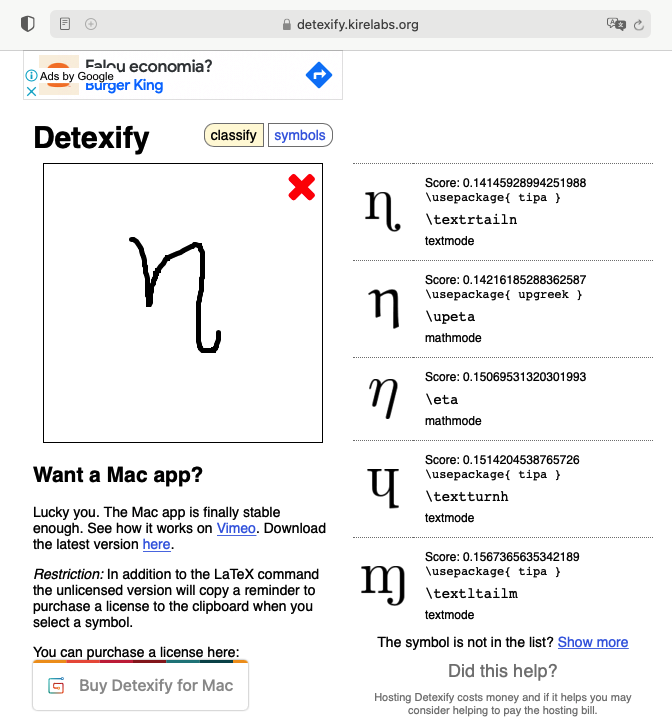

Escrevendo TCCs usando LaTeX
Este documento sugere formas de editar um arquivo LaTeX para compor o documento final de um TCC, para o curso de Eng. Eltrica da UPF (no um repositrio oficial).
Para alunos novatos em LaTeX, seguem tutoriais:
- APOSTILA DE LATEX. Programa de Educao Tutorial. Engenharia de Telecomunicaes. Universidade Federal Fluminense. Niteri-RJ. Maio / 2008. recomendo (introduo rpida e eficaz) - estava disponvel ainda em 8/02/2021
- ["Learning.tex"]: Outro tutorial abordando uso do [Overleaf] para edio LaTeX (online nas nuvenns), da ps graduao em engenharia eltrica da UFMG.
E "googlando" na internet voc vai encontrar muitas informaes mais sobre LaTeX.
Minhas recomendaes para usar LaTeX:
Instalar algum pacote compatvel com LaTeX na sua mquina. Isto varia um pouco se voc usa Windows, Linux ou MacOS.
No caso do Windows, recomendo instalar:
- [MikTex]: a modern TeX distribution for Windows, Linux and macOS;
- Voc pode tentar usar o [TeX Live], mas o MikTeX tm histrico de uso de longa data....
No caso de Linux fcil instalar (no Ubuntu), basta fazer:
Apt-get:
xxxxxxxxxx$ sudo apt update$ sudo apt-get install texlive texlive-latex-extra texlive-lang-portuguese$ sudo apt-get install texlive-math-extra
No MacOS recomendo instalar:
Instalar algum editor (de textos) mas prprio para edio LaTeX:
Para Windows, Linux, Mac:
- [TeXstudio], (eu prefiro este) ou:
- [TeXnicCenter].
Obs.: Recomendo primeiramente instalar o pacote LaTeX e depois o editor, assim, o prrpio editor j se ajusta ao seu sistema localizando os caminhos apropriados para acesso ao compilador do LaTeX.
Recomendvel instalar um editor de equaes (principalmente) para novatos em LaTeX:
- [LaTeXiT] - infelizmente s disponvel para MacOS;
- [LKatexFormula] - para Mac e Windows (similar ao LaTeXiT) e talvez para Linux;
- [TexMaths] - multiplataforma
- [Detexify] - voc desenha smbolos e ele tenta retornar o cdigo LaTeX (online): 
Exemplo 1 de uso
Segue um primeiro exemplo, mostrando um arquivo super simples: "exemplo1.tex":
xxxxxxxxxx% !TeX spellcheck = pt_BR\documentclass[10pt,a4paper,twoside]{article} %{report} %{article}\usepackage{geometry}\geometry{top=2cm,bottom=2cm,left=2.0cm,right=2.0cm}\usepackage[brazil]{babel} % hifenao em portugus\usepackage[utf8]{inputenc} % Required for inputting international characters. MacOS% \usepackage[latin1]{inputenc} % caracteres acentuados em portugues <-- usado no Windows\usepackage[T1]{fontenc} % Output font encoding for international characters\usepackage{tracefnt} % faz o prprio sistema de compilao do LaTeX gerar mais informaes respeito\usepackage{lipsum} % para preencher textos aleatrios para testes% Exemplo: \lipsum[1-4]\title{Arquivo Exemplo 1\\(Segunda linha se necessrio)\)}\author{Prof. Fernando Passold\\ Curso de Engenharia Eltrica\\ Universidade de Passo Fundo}\date{}\relax\begin{document}\maketitle%\begin{abstract}%\end{abstract} \section{Intro}Este arquivo apenas serve para testar uma primeira edio LaTeX.\section{Embasamento}Note, j estou escrevendo uma equao:\begin{equation}\label{eq:equacao1} x=\frac{-b \pm \sqrt{ b^2 - 4 \cdot a \cdot c } }{ 2 \cdot a}\end{equation}E posso referenciar esta equao no texto usando: podemos usar a eq. (\ref{eq:equacao1}), para calcular as razes de um polinmio de $2^a-$ordem.\\\lipsum[1-2]\section{Concluses}\lipsum[3-4]\end{document}Quando for compilado gera um arquivo PDF como:

Algumas observaes:
No preambulo de um arquivo LaTeX (toda parte antes de "\begin{document}") se faz necessrio indicar a condificao usada para seus arquivos.
No caso de arquivos editados no Windows, uma linha contendo:
\usepackage[latin1]{inputenc} % caracteres acentuados em portugues. <-- usado no Windows e o arquivo LaTeX ficaria algo como:
xxxxxxxxxx% !TeX spellcheck = pt_BR\documentclass[10pt,a4paper,twoside]{article} %{report} %{article}\usepackage{geometry}\geometry{top=2cm,bottom=2cm,left=2.0cm,right=2.0cm}\usepackage[brazil]{babel} % hifenao em portugus\usepackage[latin1]{inputenc} % caracteres acentuados em portugues. <-- usado no Windows\usepackage{tracefnt} % faz o prprio sistema de compilao do LaTeX gerar mais informaes respeito\usepackage{lipsum} % para preencher textos aleatrios para testes% Exemplo: \lipsum[1-4]\begin{document}\end{document}No caso de arquivos editados no Linux ou MacOS, uma linha contendo:
\usepackage[utf8]{inputenc} - um arquivo LaTeX ficaria assim:
xxxxxxxxxx% !TeX spellcheck = pt_BR\documentclass[10pt,a4paper,twoside]{article} %{report} %{article}\usepackage{geometry}\geometry{top=2cm,bottom=2cm,left=2.0cm,right=2.0cm}\usepackage[brazil]{babel} % hifenao em portugus\usepackage[utf8]{inputenc} % Required for inputting international characters\usepackage[T1]{fontenc} % Output font encoding for international characters\usepackage{tracefnt} % faz o prprio sistema de compilao do LaTeX gerar mais informaes respeito\usepackage{lipsum} % para preencher textos aleatrios para testes% Exemplo: \lipsum[1-4]\begin{document}\end{document}
Sobre linguagens usadas num arquivo .tex
Se voc necessitar escrever algo em ingls, o preambulo do arquivo ficaria:
xxxxxxxxxx% !TeX spellcheck = en_US% !TeX encoding = UTF-8%\documentclass[a4paper,10pt,DIV15]{scrartcl}\documentclass[a4paper,10pt]{article}\usepackage[english]{babel}% \usepackage[brazil]{babel}\usepackage{ucs} % and \usepackage[utf8x]{inputenc}\usepackage[utf8x]{inputenc} % para o caso do Mac%\usepackage[latin1]{inputenc} % caracteres acentuados em portugus. <-- usado no Windows\usepackage[T1]{fontenc}\usepackage{cmbright} % Computer Modern Bright%% arquivo continua...
Exemplo para TCC
Segue abaixo um simples exemplo de arquivo "exemplo_tcc.tex" que pode ser usado para iniciar sua edio do arquivo .tex referente ao relatrio do TCC.
Sugere-se a criao de um arquivo "main.tex" que "inclui" vrios arquivos .tex diferentes, onde a ideia pricipal neste arranjo que cada capitulo do documento seja um arquivo .tex separado, que pode ser editado independente do "main.tex". Lembrar apenas que no momento de compilar o arquivo, a compilao deve ser feita sobre o "main.tex".
No exemplo disponibulizado aqui, o arquivo principal possui o nome "exemplo_tcc.tex". Sua listagem segue abaixo:
x
% !TeX spellcheck = pt_BR\documentclass[10pt,a4paper,twoside]{book}\usepackage{geometry}\geometry{top=2cm,bottom=2cm,left=2.0cm,right=2.0cm}\usepackage[brazil]{babel} % hifenao em portugus\usepackage[utf8]{inputenc} % Required for inputting international characters\usepackage[T1]{fontenc} % Output font encoding for international characters\usepackage{tracefnt} % faz o prprio sistema de compilao do LaTeX gerar mais informaes respeito\usepackage{lipsum} % para preencher textos aleatrios para testes% Exemplo: \lipsum[1-4]\usepackage[usenames,dvipsnames]{color}\usepackage[table]{xcolor} % para trabalhar com \pagecolor{purple!30} e \rowcolors{<''starting row''>}{<''odd color''>}{<''even color''>}\usepackage[pdftex]{hyperref} % ajustar opes de links interativos no PDF\hypersetup{ % colorlinks = true, colorlinks = false, linkcolor = blue, anchorcolor = blue, citecolor = blue, filecolor = blue, urlcolor = blue, linkbordercolor = cyan, urlcolor = magenta}%% Criando algumas definies\def\instituicao{ Universidade de Passo Fundo\\ Curso de Engenharia Eltrica}\def\titulo{Ttulo do Trabalho}\def\autor{Siclano de Souza}\def\local{Passo Fundo -- RS}\def\data{Julho de 2021} % Ms e ano\def\aprovadoem{-- Julho de 2021}%% definindo parmetros para sistema LaTeX\title{Controle Automtico III\\(Controle Digital)}\author{Prof. Fernando Passold\\ Engenharia Eltrica\\ Universidade de Passo Fundo}\usepackage{indentfirst} % identar primeiras linhas de cada seo/pargrafo\sloppy % Ser "indulgente"!? no preenchimento das linhas - evita quebras de linha alm do nmero de colunas normais disponveis para cada linha de texto.\relax\usepackage{graphicx} % para poder incluir figuras\usepackage{amsfonts,amsmath,amssymb} % para incluir equaes matemticas e smbolos especiais\usepackage{xfrac} % Provides \sfrac{}\usepackage{chemarrow} % para usar \autorightarrow{abc}{def}\usepackage[makeroom]{cancel} % canceling therms on math expressions - http://tex.stackexchange.com/questions/75525/how-to-write-crossed-out-math-in-latex% Use: \cancel{5y}, \bcancel{5y}, \xcancel{5y}, \cancelto{\infty}{5y}=0\usepackage{caption} % reduce space between the caption and the figure is called skip (default is 10pt). - Ref.: http://tex.stackexchange.com/questions/94016/how-to-reduce-space-between-image-and-its-caption\usepackage {enumerate} % para refinar ambiente "enumerate", por ex.: a), II)..\usepackage {palatino} % fonte "elegante"\usepackage{listings} % para incluir cdigos formatados%%%%%%%%%%%%%%%%%%%%%%%%%%%E% Para incluir referncias bibliogrficas:% Ateno: usado: biber ==> para compilar (incluir) as referncias bibliogrficas% corretamente, voc deve, depois de compilado ao menos 1x o arquivo .tex,% optar pela opo Biber no momento de compilar Ref. Bib.%%%%%%%%%%%%%%%%%%%%%%%%%%%\usepackage[backend=biber, style=abnt, justify, giveninits, extrayear, repeatfields]{biblatex}% Ref.: http://ctan.math.washington.edu/tex-archive/macros/latex/contrib/biblatex-contrib/biblatex-abnt/doc/biblatex-abnt.pdf\addbibresource{learning.bib} % especifica o arquivo *.BIB ser usado <<-- para biblatex!% no esquecer de incluir a extenso *.bib seno "biber" no encontra o arquivo das referncias..% Ateno compliar usando "biber"... antes do run normal% Ver.: http://ctan.math.washington.edu/tex-archive/macros/latex/contrib/biblatex-contrib/biblatex-abnt/doc/biblatex-abnt.pdf% Comandos:% \cite{amaral15} % (AMARAL, 2015)% \cites{moretti09}{mann09}{amaral15}% (MORETTI, 2009c; MANN, 2009; AMARAL, 2015)% \textcites{moretti09}{mann09}{amaral15}% Moretti (2009c), Mann (2009) e Amaral (2015%%%%%%%%%%%%%%%%%%%%%%%%%%%%%%%%%%%%%%%%%%%%%%%%%%%%%%%%%%%%%%%%%%%%%%%%%%%%%%%%%%%%%%%%%%%%%%%%%%%%%%%%%%%%%%%%%%%%%%%%%%%%%%%%%%%%%%%%%%%%%%%%%%%%%%%%%%%%%%%%\begin{document}\pagestyle{empty} \include{capa} %pagina de titulo\include{folhadeaprovacao} % folha aprovao% pagina agradecimentos\include{resumo} % pagina Resumo\include{abstract} % pagina Abstract\listoffigures % lista de figuras\listoftables % lista de tabelas\tableofcontents % ndice\pagestyle {plain} % indica numerar prximas pginas%% Iniciam captulos do documento% Sugere-se um arquivo tex para cada capitulo\include{introducao}\include{cap2}\include{cap3}\include{resultados}\include{conclusoes_discussoes}% Referncias bibliogrficas\printbibliography[heading=bibintoc] % <-- add a ToC entry for the bibliography\printbibliography % [title={Whole bibliography}] % <-- imprime referencias bibliogrficas...% Seguem anexos\addcontentsline{toc}{chapter}{Anexos}\appendix\include{anexo_codigo_matlab_sensor_ultra}\include{opencv_python}\end{document}Este arquivo "chama" vrios ontros arquivos, como por exemplo: "cap2.tex":
xxxxxxxxxx%% cap2.tex == Fundamentao terica\chapter{Fundamentao}Apresenta a teoria que foi usada para realizar o trabalho. Pode ser apresentado de forma cronolgica, citando sistemas semelhantes (vantagens e desvantagens). Ao final apresenta o "estado da arte" associado com o desenvolvimento deste projeto. Passa uma idia para o leitor de sistemas semelhantes ou como o trabalho pode ser desenvolvido (no este captulo que apresenta como o trabalho foi desenvolvido; isto fica para o prximo captulo).\\Pode introduzir um pargrafo explicando como este captulo foi organizado, a forma na qual foi dividido. No ultrapassar muito 7 linhas.%Dividir em sub-captulos => sees\section{Sistemas Similares (Reviso da Literatura)}Este s um exemplo mostrando como incluir/realizar referncias bibliogrficas.\\Robs foram maquinas criadas inicialmente para realizar tarefas repetitivas, principalmente como o caso com robs manipuladores industriais normalmente usados na industria automobilstica que passam o dia executando sempre a mesma sequencia de movimentos em operaes comuns de pintura ou soldagem \cite{sciavicco2012modelling,siciliano2016springer}. \\ % Craig, 2005Mas alguns rob\^{o}s deixaram de ser fixos e evolu\'{i}ram para estruturas m\'{o}veis ou plataformas m\'{o}veis, inicialmente tele-operadas. Com o passar do tempo, e aprimoramentos associados principalmente com a \'{a}rea de intelig\^{e}ncia artificial passaram a possuir certo comportamento aut\^{o}nomo, ou seja, que n\~{a}o depende de uma ao direta humana e foram sendo capazes de continuamente reagir de forma aut\^{o}noma ao seu pr\'{o}prio entorno, desviando automaticamente de obst\'{a}culos \`{a} medida que se locomoviam, at\'{e} chegar ao ponto de, usando sensores apropriados, serem capazes de mapear por conta pr\'{o}pria o ambiente ao seu redor (entorno) e at\'{e} mesmo se localizar no mesmo de forma aut\^{o}noma \cite{siegwart2011introduction,russel2003,Livro_Robotica_geral_cap9_AI,SicilianoKhatib2016} Neste \'{u}ltimo caso, ao procedimento de Mapeamento e Localizao realizados de forma simult\^{a}nea se d\'{a} o nome de SLAM (Simultaneous Localization and Mapping) \cite{thrun2005probabilistic}. Para realizar este tipo de ao, obviamente os rob\^{o}s dependem do conhecimento do ambiente e diferentes tipos de sensores s\~{a}o adotados para detectar objetos, medir dist\^{a}ncias de obst\'{a}culos, inferir dist\^{a}ncias de fonte de refer\^{e}ncia fixas (radiofar\'{o}is), inferir dist\^{a}ncias j\'{a} percorridas (encoders) e mapear o entorno usando sensores visuais (vis\~{a}o computacional ou de m\'{a}quina) ou sensores de varredura laser (liDAR = laser rangefinders) \cite{Borenstein96,thrun2005probabilistic}.\\ %[Borenstein et al., 1996; Thrun et al., 2005].\\Rob\^{o}s m\'{o}veis ou plataformas m\'{o}veis aut\^{o}nomas dependem do conhecimento do ambiente para se locomoverem e diferentes tipos de sensores s\~{a}o adotados para detectar objetos, medir dist\^{a}ncias de paredes, inferir dist\^{a}ncias de r\'{a}dio-far\'{o}is (intensidade do sinal) e mesmo para inferir dist\^{a}ncias j\'{a} percorridas (\textit{encoders}). Mas sensores s\~{a}o sujeitos \`{a} ru\'{i}dos de leitura e defeitos e de forma a melhorar valores de medio quanto ao ambiente, algum processo de fus\~{a}o sensorial deve ser empregado, combinando informaes de dois ou mais sensores \cite{Borenstein96,siegwart2011introduction}.\\ %[Borenstein et al., 1996; Siegwart et al., 2011]. \\Rob\^{o}s para agricultura s\~{a}o normalmente mais complexos na sua parte mec\^{a}nica porque requerem mecanis- mos de trao capazes de cruzar imperfei\~{o}es no terreno onde est\~{a}o se locomovendo (eventualmente saltando pedras e troncos de \'{a}rvores ca\'{i}dos no ch\~{a}o). Para n\~{a}o dizer que ainda trazem acoplado numa plataforma que \'{e} m\'{o}vel uma esp\'{e}cie de rob\^{o} manipulador na forma de uma garra ou pina eventualmente sendo capaz de interagir com o entorno.\\\cite{agroReinoUnidoTera2019} e \cite{kolleweRobocropWorldFirst2019} citam o exemplo de um rob\^{o} rec\'{e}m criado pela startup inglesa Fieldwork Robotics, uma spinoff da Universidade de Plymouth, na Inglaterra, desenvolvido para selecionar e colher framboesas. Trata-se de um \'{o}timo exemplo de integrao sensorial, j\'{a} que o rob\^{o} \'{e} equipado com uma garra manipuladora (pina) equipada com sensor de imagem 3D (c\^{a}mera de profundidade) e algoritmos de aprendizagem de m\'{a}quina e IA para analisar o grau de desenvolvimento de cada fruta. Notar que sua pina \'{e} capaz de se aproximar gentilmente da fruta usando aprendizagem de m\'{a}quina. Segundo a proposta desta startup, este maquin\'{a}rio ser\'{a} capaz de colher 25 mil frutas por dia, 10 mil a mais que um humano. O processo ainda \'{e} um pouco lento, com o rob\^{o} levando pouco mais de 1 minuto por framboesa. Mas a empresa pensa em resolver este problema numa vers\~{a}o final com quatro braos operando simultaneamente, e assim a m\'{a}quina poder\'{a} identificar o grau de desenvolvimento da fruta em menos de 10 segundos. Na China j\'{a} existem rob\^{o}s colhendo tomates e testes est\~{a}o sendo realizados testes para colher couve-flor \cite{StartAgro2019Walmart}.\\\section{Hardwares similares}Introduz sistema similares j existentes (ou no). Pode apresentar de forma cronolgica como sistemas semelhantes fora desenvolvidos ao logno da estria. Como eles foram evoluindo, que cada novo sistema trouxe de vantagens em relao aos anteriores.\subsection{Sensores mais usados}Aqui se apresentam variveis (estados do sistema) que devem ser captados e se apresenta as diferentes possibilidades e tipos de sensores que podem ser empregados para captar cada tipo diferente de varivel necessria para o sistema.\\Aqui devem ser apresentados os diferentes tipos de sensores, caractersticas bsicas dos mesmos. Algo pode ser comentado a respeito de sua "popularidade". Sugere-se apresentar um quadro/tabela com as principais caractersticas ao lado de uma figura do sensor -- por exemplo, ver figura XX.\\\subsection{Kits de desenvolvimento}% Breve explicao neste casoAqui pode-se apresentar placas ou sistemas quase prontos, apresentando suas principais caractersticas. Uma foto com tabela resumo ao lado o ideal. A ideia aqui passar para o leitor uma ideia da potencialidade de certo(s) sistema(s).\\Se mais de um sistema for apresentado (ou est sendo selecionado), **muito** interessante, terminar esta seo apresentando uma **tabela comparativa final** entre diferentes opes disponveis. Esta tabela pode ser bastante til para ressaltar grandes diferenas de valores entre diferentes produtos ou ressaltar grande diferenas de poder de processamento, quantidade de memria disponvel para programao, clock de cada sistema, etc; por exemplo, vide tabela \ref{tab:comparativo_raspberry_jetson_nano}.\\\begin{table} \begin{center} \begin{tabular}{rll} \hline Caracterstica: & RaspBerry Pi IV & NVidia Jetson Nano\\ \hline Clock: & ?? & ??\\ Memria RAM: & ?? & ??\\ GPU: & ?? & ?? \\ VRAM: & (compartilhada) & (compartilhada) \\ Pinos I/O: & 44? & 50? \\ Conector Cmera: & Sim (tipo XX) & Sim (tipo ZZ) \\ Custo Mdio: & R\$ 300,00 & R\$ 500,00 \\ \hline \end{tabular} \end{center} \caption{Tabela comparativa entre placa RaspBerry Pi IV e NVidia Jetson Nano.}\label{tab:comparativo_raspberry_jetson_nano}\end{table}\section{Algoritmo XX}Note, j estou escrevendo uma equao:\begin{equation}\label{eq:equacao1} x=\frac{-b \pm \sqrt{ b^2 - 4 \cdot a \cdot c } }{ 2 \cdot a}\end{equation}E posso referenciar esta equao no texto usando: podemos usar a eq. (\ref{eq:equacao1}), para calcular as razes de um polinmio de $2^a-$ordem.\\\section{Softwares similares}Aqui se apresentam como sistemas similares foram desenvolvidos usando que tipo de software, linguagem de programao, *framework*, etc. Aqui so apresentadas o caso de uso de bibliotecas especias como **OpenCV** (e alguns de seus comandos com rpidos exemplos), **Matplotlib** (biblioteca para grficos do Python, similar ao Matlab). Aqui se apresentam as bibliotecas, recursos, repositrios externos disponveis e se passa uma idia do que pode ser desenvolvido com cada uma destas partes/recursos. Seria timo apresentar testes realizados pelo prprio mostrando resultados obtidos com o uso de certas ferramentas (e de forma stil fica claro que o aluno estava se familiarizando com alguma ferramenta/recurso especfico). Cdigos (completos ou longos) \textbf{no so} apresentados aqui, se for desejado disponibilizar/apresentar algum cdigo exemplo, usar **Anexos** e referenciar que o cdigo usado para produzir a figura YY consta no anexo ZZ.\subsection{Biblioteca de Software OpenCV}Para processamento de imagens comum a adoo da biblioteca grfica **OpenCV**. A figura \ref{fig:findmyball2} mostra um exemplo de uso.\begin{figure}[!hbt] \centering \includegraphics[width=0.35\linewidth]{figuras/find_my_ball_2} \caption{Resultado da rotina \textsf{find\_my\_ball.py} usando biblioteca OpenCv.} \label{fig:findmyball2}\end{figure}O cdigo usado para gerar a figura acima mostrado no anexo \ref{Anexo:OpenCV-Python}.% fim do Captulo 2.E segue como exemplo, parte do arquivo "learning.bib" que contm os dados das referncias bibliogrficas (mostrado aqui para passar a ideia deste tipo de arquivo no LaTeX):
xxxxxxxxxx@online{ArduinoSupportMATLAB, title = {Arduino {{Support}} from {{MATLAB}}}, url = {https://www.mathworks.com/hardware-support/arduino-matlab.html}, urldate = {2020-06-20}, abstract = {Connect to and control Arduino inputs and outputs from MATLAB}, file = {/Volumes/Data/Users/fernandopassold/Zotero/storage/I5GSXZS6/arduino-matlab.html}, langid = {english}}@article{Arulkumaran_2017, title = {Deep Reinforcement Learning: {{A}} Brief Survey}, author = {Arulkumaran, K. and Deisenroth, M. P. and Brundage, M. and Bharath, A. A.}, date = {2017}, journaltitle = {IEEE Signal Processing Magazine}, volume = {36}, pages = {26--38}, date-modified = {2018-09-17 02:04:27 -0300}, number = {6}}@article{arulkumaranDeepReinforcementLearning2017, title = {Deep Reinforcement Learning: {{A}} Brief Survey}, author = {Arulkumaran, K and Deisenroth, M P and Brundage, M and Bharath, A A}, date = {2017}, journaltitle = {IEEE Signal Processing Magazine}, volume = {36}, pages = {26--38}, number = {6}}
Note que no ser demonstrado nesta pgina o contedo de todos os arquivos chamados por "exemplo_tcc.tex". Notar que todos os arquivos foram disponibilizados de forma compactada no arquivo: [TCC_Latex.zip].
Note que uma rvore de arquivos criada para gerar o documento final:
xxxxxxxxxx/TCC_Latex % tree.abstract.texanexo_codigo_matlab_sensor_ultra.texcap2.texcap3.texcapa.texcodigofind_my_ball.pyteste_sonar.mconclusoes_discussoes.texexemplo1.texexemplo_tcc.tex <--------------------------------- Arquivo principal ("main")figuras220px-Lego_Mindstorms_Sound_Finder.jpgRNfx.gifexemplo1.pngexemplo_TeXStudio.pngfeedforward_error_learning.giffind_my_ball_2.pngfun_red_bull.gifref_bib_template_overleaf_monografia_abnt.pngscara.jpgsonar_test2.pngfolhadeaprovacao.texintroducao.texlearning.bibopencv_python.texresultados.texresumo.tex2 directories, 26 files
A prxima figura mostra o ambiente de edio TeXStudio adotado para compilar este arquivo e gerar como resultado final o arquivo [exemplo_tcc.pdf]:

E na prxima figura chamada a anteo para a forma como so geradas as referncias bibliogrficas. Antigamente o LaTeX usava o comando % biblatex para compilar os arquivo .bib associados um arquivo .tex. Mas o exemplo mostrado aqui, usa um sistema mais recente chamado de biber para gerao de referncias bibliogrficas com formataes complexas como caso da ABNT 3.14 (de meados de 2018). E neste caso, usar o comando "BibTeX" para processar as referncias bibliogrficas vai incutir erros. Voc deve intercalar o comando "Biber" ao procedimento de "rodar" o arquivo .tex cada vez que incluir uma nova referncia bibliogrfica no texto ou no arquivo .bib. No caso do TeXStudio, o "Biber" est "escondido" no menu:

E usar o comando "PDLaTeX" para gerar (compilar) o pdf final ou simplesmente clicar no boto "play " .
Boa sorte.
Outras Sugestes
A medida que sua compreenso sobre o uso do LaTeX aumentar, voc pode querer gerar arquivos mais elegantes e sofisticados, por exemplo:
Exemplo de monografia (simplificada) brasileira escrita usando ABNT -->
Obs: no Overfleaf, (Open as Template) acaba abrindo toda a estutura necessria para uma edio online deste documento. Segue abaixo apenas como exemplo, o arquivo "main.tex" (principal):
xxxxxxxxxx% ---% Criado por Digo Marques% Template (Modelo) Simplificado para monografias usando normas ABNT%% Os arquivos que formatam as referncias no so de minha autoria.% O arquivo abntcite-alf.sty o pacote abntex2cite, criado pelo projeto abntex (https://www.abntex.net.br/)% O arquivo abnt-num.bst foi publicado por Daniel Miranda em http://hostel.ufabc.edu.br/~daniel.miranda/abnt.bst% Para entender como este modelo estruturado leia o arquivo LEIAME.txt% ---\documentclass[12pt, oneside, a4paper, english, brazil]{book}\usepackage[alf, % Para referencia alfabetica%num, % Para referencia numericacom-coorient, % Mantem as opcoes com coorientador%sem-coorient, % Remove as opcoes com coorientadorcom-prof-tres, % Mantem o professor 3 da banca%sem-prof-tres, % Remove o professor 3 da banca%com-prof-quatro, % Mantem o professor 4 da bancasem-prof-quatro, % Remove o professor 4 da banca]{stmonograph} % Pacote feito para este template\estiloref\input{dados}% \tikzset{external/force remake} % Forca as figuras tikz serem refeitas\begin{document}\selectlanguage{brazil}% ---% ELEMENTOS PR-TEXTUAIS% ---\include{extras/capa}\include{extras/folharosto}% \include{pre-textual/fichacatalografica}\include{extras/folhadeaprovacao}\include{extras/dedicatoria}\include{pre-textual/agradecimento}\include{extras/epigrafe}\include{pre-textual/resumo}\include{pre-textual/abstract}\listadefiguras\listadetabelas\sumario% ---% ELEMENTOS TEXTUAIS% ---\cabecalhos % Configura os cabecalhos para os elementos textuais\include{textual/cap1} % Capitulo 1\include{textual/cap2} % Capitulo 2\include{textual/cap3} % Capitulo 3\include{textual/cap4} % Capitulo 4\include{textual/cap5} % Capitulo 5% ---% ELEMENTOS POS-TEXTUAIS% ---\asreferencias % Insere as referencias\apendiceconfig % Configura os apendices\include{pos-textual/apendicea} % Apndice A\end{document}Obs.: para este arquivo funcionar localmente no seu computador ser necessrio baixar no mesmo diretrio vrios outros arquivos, especialmente: comandos.tex, stmonograph.sty (muito importante neste caso; note que dentro de
main.texreferenciado na parte:`\usepackage[ ... ]{stmonograph}) e outros que dependem da estrutura de arquivos sendo criada):Particularmente no so to f deste "template" porque usa de maneira "obscura" o comando para gerar referncias bibliogrficas. No caso so usados os arquivos
abnt-num.bsteabntcite-alf.stypara definir a forma como deve ser gerada a informao para referncias bibliogrficas, junto com arquivo das referncias (conforme esperado):referencias.bib:xxxxxxxxxx@article{exemplo,title={Ttulo do trabalho},author={Primeiro Autor and Segundo Autor},journal={Nome do peridico},volume={37},number={7},pages={722},year={1990},publisher={Publisher},address = {Endereo}}@article{exemplo2,title={Ttulo do trabalho 2},author={Primeiro Autor and Segundo Autor},journal={Nome do peridico},volume={37},number={7},pages={722},year={1990},publisher={Publisher},address = {Endereo}}@article{exemplo3,title={Ttulo do trabalho 3},author={Primeiro Autor and Segundo Autor},journal={Nome do peridico},volume={37},number={7},pages={722},year={1990},publisher={Publisher},address = {Endereo}}Note que no texto (arquivo .tex) so usados comandos como:
xxxxxxxxxxtexto \cite{exemplo,exemplo2,exemplo3}para que sejam includas referncias, o que faz gerar um PDF com:

Mas uma opo de uso.
Fernando Passold, em 08.02.2021